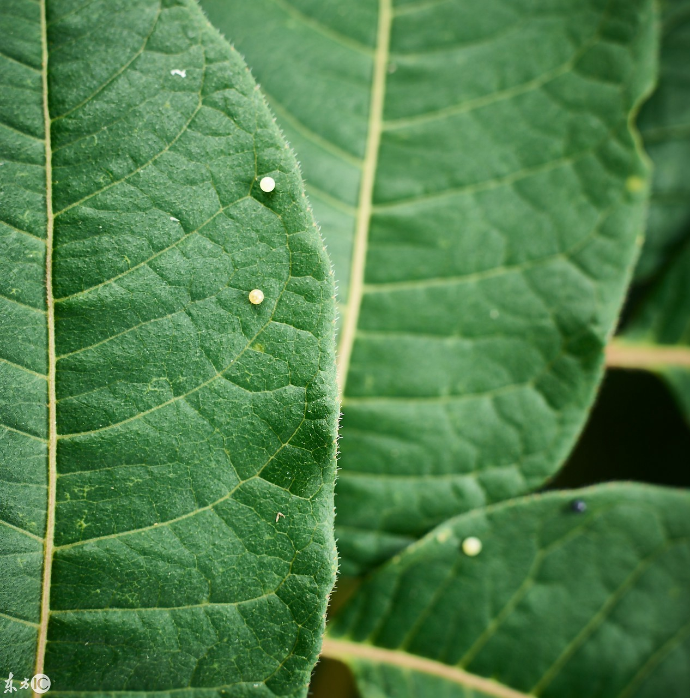
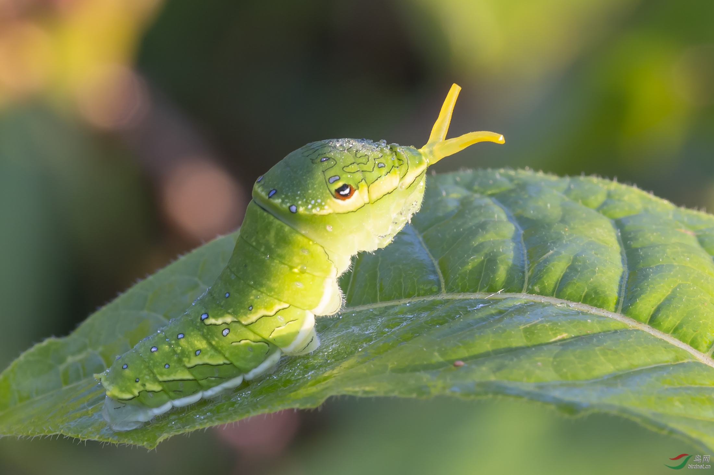
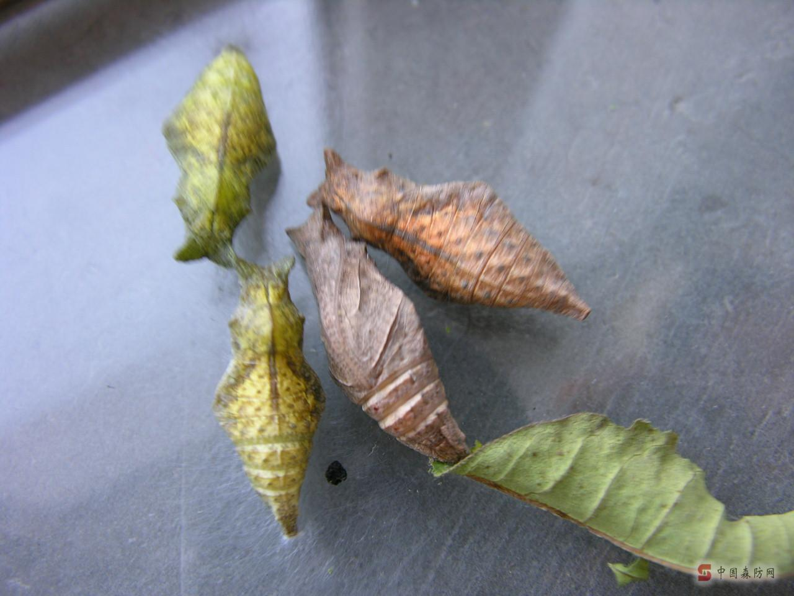
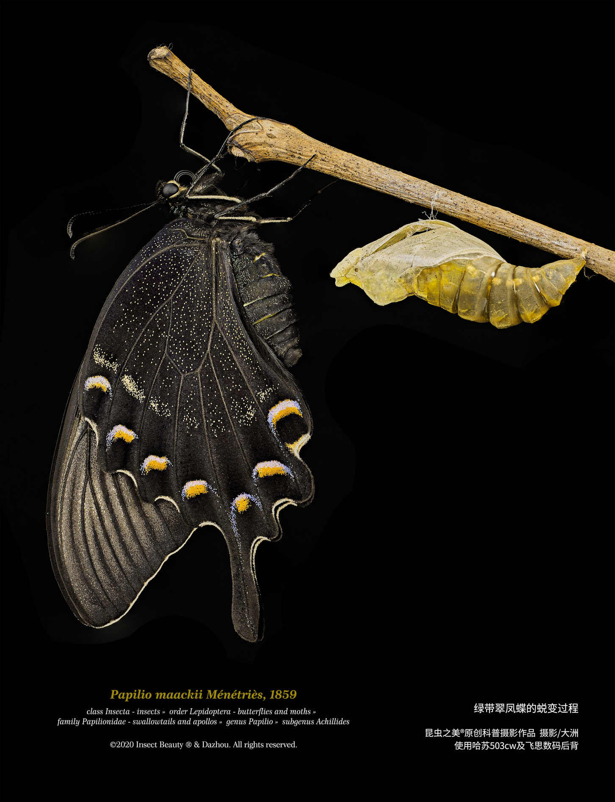
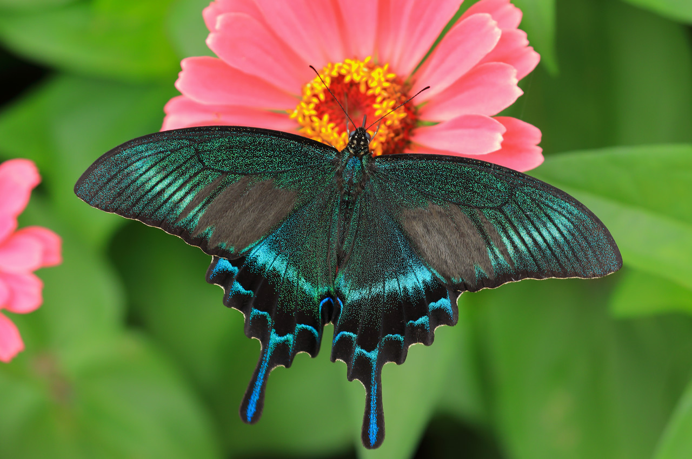

绿带翠凤蝶，学名 Papilio maackii，亦名琉璃翠凤蝶、深山碧凤蝶，被誉为森林绿皇后，是我国山林间极具代表性的大型凤蝶。翅展80‑130毫米，分春、夏两型，夏型体型更为硕大，色彩也更为浓烈。翅膀底色如丝绒般漆黑，依靠鳞片微观结构折射出变幻的翠蓝与金绿光带，后翅点缀红色新月斑纹，拖着修长尾突，光影流转间华贵动人。
多栖息于山地林间，雄蝶喜爱在溪涧湿地吸水，飞行迅疾有力。幼虫以黄檗、青花椒等芸香科植物为食，幼时拟态鸟粪自保，以蛹熬过漫漫寒冬，待到春暖方才破茧而出。它的璀璨并非来自色素，而是大自然赋予鳞片的光学奇迹，是山野之中难得一见的瑰丽生灵。




